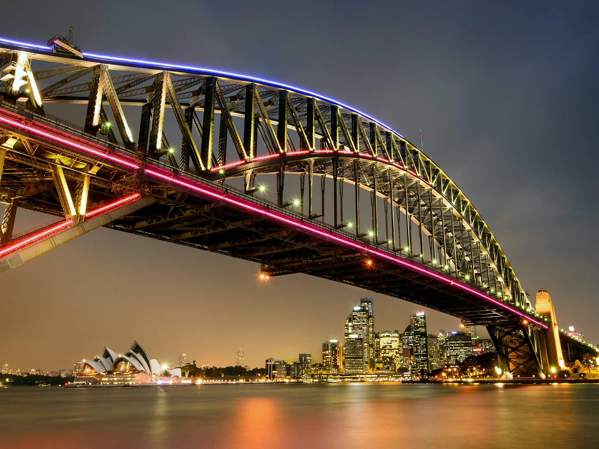

In this project, we explored bridge design and how to create them efficiently. As a class, we constructed spaghetti bridges and tested how much weight they could hold. We had specific restrictions: we could use only 250 grams of spaghetti and five hot glue sticks, and the dimensions of the bridges couldn't be more than 60 cm in length, 10 cm in width, and 20 cm in height. We tested this with a hydraulic press
